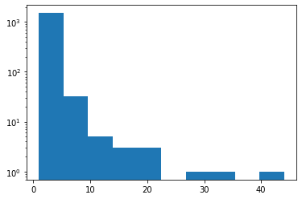

Beginning
Contents
Beginning#
Pandas cheat sheet: https://pandas.pydata.org/Pandas_Cheat_Sheet.pdf
Resource
Read data records - 違規藥品廣告#
違規藥品廣告資料集 https://data.nat.gov.tw/dataset/14196
import pandas as pd
drug_df = pd.read_csv('https://github.com/P4CSS/PSS/raw/master/data/14196_drug_adv.csv', error_bad_lines=False)
# drug_df
drug_df.columns
/var/folders/j3/p4x0mssx55nd8dn903h5wdb00000gn/T/ipykernel_28125/2567337408.py:2: FutureWarning: The error_bad_lines argument has been deprecated and will be removed in a future version. Use on_bad_lines in the future.
drug_df = pd.read_csv('https://github.com/P4CSS/PSS/raw/master/data/14196_drug_adv.csv', error_bad_lines=False)
Index(['違規產品名稱', '違規廠商名稱或負責人', '處分機關', '處分日期', '處分法條', '違規情節', '刊播日期',
'刊播媒體類別', '刊播媒體', '查處情形'],
dtype='object')
%who
drug_df pd
drug_df.columns = ['pname', 'cname', 'agency', 'issuedate', 'law', 'fact',
'pubDate', 'pubMediaType', 'pubMedia', 'trace']
drug_df.columns
drug_df
| pname | cname | agency | issuedate | law | fact | pubDate | pubMediaType | pubMedia | trace | |
|---|---|---|---|---|---|---|---|---|---|---|
| 0 | 《現貨》日本熱銷 超人氣SS製藥 痘痘乳膏 | Y7868533113/鍾青砡 | NaN | 08 15 2017 12:00AM | NaN | 無照藥商 | 02 3 2017 12:00AM | 網路 | Yahoo！奇摩拍賣 | 相關案件已處分 |
| 1 | 《現貨》大正漢方腸胃藥 60錠 | Y9159169900/鍾青砡 | NaN | 08 15 2017 12:00AM | NaN | 無照藥商 | 02 3 2017 12:00AM | 網路 | Yahoo！奇摩拍賣 | 相關案件已處分 |
| 2 | 《現貨》日本熱銷 超人氣SS製藥 痘痘乳膏 | Y9159169900/鍾青砡 | NaN | 08 15 2017 12:00AM | NaN | 無照藥商 | 02 3 2017 12:00AM | 網路 | Yahoo！奇摩拍賣 | 相關案件已處分 |
| 3 | 日本小林製藥 - 喉嚨噴劑 (現貨) | **VIOLA Shop**/代號 Y0899501333/蔡佩蓉 | NaN | 05 16 2017 12:00AM | NaN | 無照藥商 | 02 3 2017 12:00AM | 網路 | Yahoo！奇摩拍賣 | 相關案件已處分 |
| 4 | 《現貨》日本 小林製藥 命之母 生命之 840錠 女性更年期保養 | 日本藥妝全職服務現貨快速出/代號 Y4681313568/鍾青砡 | NaN | 08 15 2017 12:00AM | NaN | 無照藥商 | 02 3 2017 12:00AM | 網路 | Yahoo！奇摩拍賣 | 相關案件已處分 |
| ... | ... | ... | ... | ... | ... | ... | ... | ... | ... | ... |
| 1755 | 全新麵包超人止癢貼片（76入） | 非廠商/蕭千容 | NaN | 10 19 2017 12:00AM | NaN | 無照藥商 | 06 22 2017 12:00AM | 網路 | 蝦皮拍賣網站 | 輔導結案 |
| 1756 | 御岳百草丸 | 非廠商/吳俊儀 | NaN | 11 1 2017 12:00AM | 藥事法第39條 | 藥品未申請查驗登記 | 05 23 2017 12:00AM | 網路 | 蝦皮拍賣網站 | 未違規結案 |
| 1757 | （現貨供應中）日本樂敦，減輕疲憊 | 非廠商/陳O卿 | NaN | 10 20 2017 12:00AM | NaN | 無照藥商藥品未申請查驗登記 | 07 20 2017 12:00AM | 網路 | 商店街個人賣場網站 | 輔導結案 |
| 1758 | 客製訂單～詹淑惠 | 非廠商/陳O卿 | NaN | 10 20 2017 12:00AM | NaN | 無照藥商藥品未申請查驗登記 | 07 20 2017 12:00AM | 網路 | 商店街個人賣場網站 | 輔導結案 |
| 1759 | bb美白錠 | 非廠商/楊庭妮 | NaN | 09 28 2017 12:00AM | NaN | 廣告內容誇大不實 | 06 7 2017 12:00AM | 網路 | 蝦皮拍賣網站 | 輔導結案 |
1760 rows × 10 columns
print(drug_df.pubMediaType)
≈
# print(set(drug_df.pubMediaType))
# drug_df
Input In [4]
≈
^
SyntaxError: invalid character '≈' (U+2248)
Counting#
from collections import Counter
type_dict = Counter(drug_df.pubMediaType)
print(type_dict)
print(Counter(drug_df.fact))
drug_df.pubMediaType.value_counts()
網路 1479
平面媒體 111
電視 86
廣播電台 71
其他 13
Name: pubMediaType, dtype: int64
drug_df['pubMediaType'].value_counts()
網路 1479
平面媒體 111
電視 86
廣播電台 71
其他 13
Name: pubMediaType, dtype: int64
Read JSON data value: Youbike#
df.head() print out the first 5 entries of data
M1. Convert to list of dicts by hand#
import requests
data = requests.get('https://tcgbusfs.blob.core.windows.net/blobyoubike/YouBikeTP.gz').json()
# all_list = []
# for k, v in data["retVal"].items():
# # print(k, v)
# all_list.append(v)
print(all_list[:3])
# Using list comprehension
all_list = [v for v in data["retVal"].values()]
ubike_df = pd.DataFrame(all_list)
ubike_df.head()
[{'sno': '0001', 'sna': '捷運市政府站(3號出口)', 'tot': '180', 'sbi': '89', 'sarea': '信義區', 'mday': '20210322163525', 'lat': '25.0408578889', 'lng': '121.567904444', 'ar': '忠孝東路/松仁路(東南側)', 'sareaen': 'Xinyi Dist.', 'snaen': 'MRT Taipei City Hall Stataion(Exit 3)-2', 'aren': 'The S.W. side of Road Zhongxiao East Road & Road Chung Yan.', 'bemp': '90', 'act': '1'}, {'sno': '0002', 'sna': '捷運國父紀念館站(2號出口)', 'tot': '48', 'sbi': '7', 'sarea': '大安區', 'mday': '20210322163540', 'lat': '25.041254', 'lng': '121.55742', 'ar': '忠孝東路四段/光復南路口(西南側)', 'sareaen': 'Daan Dist.', 'snaen': 'MRT S.Y.S Memorial Hall Stataion(Exit 2.)', 'aren': 'Sec,4. Zhongxiao E.Rd/GuangFu S. Rd', 'bemp': '41', 'act': '1'}, {'sno': '0003', 'sna': '台北市政府', 'tot': '40', 'sbi': '16', 'sarea': '信義區', 'mday': '20210322163520', 'lat': '25.0377972222', 'lng': '121.565169444', 'ar': '台北市政府東門(松智路) (鄰近信義商圈/台北探索館)', 'sareaen': 'Xinyi Dist.', 'snaen': 'Taipei City Hall', 'aren': 'Taipei City Government Eastgate (Song Zhi Road)', 'bemp': '15', 'act': '1'}]
| sno | sna | tot | sbi | sarea | mday | lat | lng | ar | sareaen | snaen | aren | bemp | act | |
|---|---|---|---|---|---|---|---|---|---|---|---|---|---|---|
| 0 | 0001 | 捷運市政府站(3號出口) | 180 | 88 | 信義區 | 20210322163825 | 25.0408578889 | 121.567904444 | 忠孝東路/松仁路(東南側) | Xinyi Dist. | MRT Taipei City Hall Stataion(Exit 3)-2 | The S.W. side of Road Zhongxiao East Road & Ro... | 91 | 1 |
| 1 | 0002 | 捷運國父紀念館站(2號出口) | 48 | 7 | 大安區 | 20210322163840 | 25.041254 | 121.55742 | 忠孝東路四段/光復南路口(西南側) | Daan Dist. | MRT S.Y.S Memorial Hall Stataion(Exit 2.) | Sec,4. Zhongxiao E.Rd/GuangFu S. Rd | 41 | 1 |
| 2 | 0003 | 台北市政府 | 40 | 16 | 信義區 | 20210322163823 | 25.0377972222 | 121.565169444 | 台北市政府東門(松智路) (鄰近信義商圈/台北探索館) | Xinyi Dist. | Taipei City Hall | Taipei City Government Eastgate (Song Zhi Road) | 15 | 1 |
| 3 | 0004 | 市民廣場 | 60 | 29 | 信義區 | 20210322163844 | 25.0360361111 | 121.562325 | 市府路/松壽路(西北側)(鄰近台北101/台北世界貿易中心/台北探索館) | Xinyi Dist. | Citizen Square | The N.W. side of Road Shifu & Road Song Shou. | 31 | 1 |
| 4 | 0005 | 興雅國中 | 60 | 40 | 信義區 | 20210322163822 | 25.0365638889 | 121.5686639 | 松仁路/松仁路95巷(東南側)(鄰近信義商圈/台北信義威秀影城) | Xinyi Dist. | Xingya Jr. High School | The S.E. side of Road Songren & Ln. 95, Songre... | 18 | 1 |
M2. Using built-in function to pandas#
# Using pandas built-in function to convert dictionary to pandas df
import requests
data = requests.get('https://tcgbusfs.blob.core.windows.net/blobyoubike/YouBikeTP.gz').json()
ubike_df = pd.DataFrame.from_dict(data['retVal'], orient='index')
ubike_df.head()
| sno | sna | tot | sbi | sarea | mday | lat | lng | ar | sareaen | snaen | aren | bemp | act | |
|---|---|---|---|---|---|---|---|---|---|---|---|---|---|---|
| 0001 | 0001 | 捷運市政府站(3號出口) | 180 | 49 | 信義區 | 20210322235225 | 25.0408578889 | 121.567904444 | 忠孝東路/松仁路(東南側) | Xinyi Dist. | MRT Taipei City Hall Stataion(Exit 3)-2 | The S.W. side of Road Zhongxiao East Road & Ro... | 129 | 1 |
| 0002 | 0002 | 捷運國父紀念館站(2號出口) | 48 | 3 | 大安區 | 20210322235239 | 25.041254 | 121.55742 | 忠孝東路四段/光復南路口(西南側) | Daan Dist. | MRT S.Y.S Memorial Hall Stataion(Exit 2.) | Sec,4. Zhongxiao E.Rd/GuangFu S. Rd | 45 | 1 |
| 0003 | 0003 | 台北市政府 | 40 | 9 | 信義區 | 20210322235220 | 25.0377972222 | 121.565169444 | 台北市政府東門(松智路) (鄰近信義商圈/台北探索館) | Xinyi Dist. | Taipei City Hall | Taipei City Government Eastgate (Song Zhi Road) | 22 | 1 |
| 0004 | 0004 | 市民廣場 | 60 | 5 | 信義區 | 20210322235245 | 25.0360361111 | 121.562325 | 市府路/松壽路(西北側)(鄰近台北101/台北世界貿易中心/台北探索館) | Xinyi Dist. | Citizen Square | The N.W. side of Road Shifu & Road Song Shou. | 55 | 1 |
| 0005 | 0005 | 興雅國中 | 60 | 4 | 信義區 | 20210322235222 | 25.0365638889 | 121.5686639 | 松仁路/松仁路95巷(東南側)(鄰近信義商圈/台北信義威秀影城) | Xinyi Dist. | Xingya Jr. High School | The S.E. side of Road Songren & Ln. 95, Songre... | 55 | 1 |
Pandas 1. Observing data#
Oberserving data df.info() and df.describe() 觀察各個變數的分佈 to check data type or get basic summary of data 。
Overview whole df#
ubike_df.info()
<class 'pandas.core.frame.DataFrame'>
Index: 400 entries, 0001 to 0405
Data columns (total 14 columns):
# Column Non-Null Count Dtype
--- ------ -------------- -----
0 sno 400 non-null object
1 sna 400 non-null object
2 tot 400 non-null object
3 sbi 400 non-null object
4 sarea 400 non-null object
5 mday 400 non-null object
6 lat 400 non-null object
7 lng 400 non-null object
8 ar 400 non-null object
9 sareaen 400 non-null object
10 snaen 400 non-null object
11 aren 400 non-null object
12 bemp 400 non-null object
13 act 400 non-null object
dtypes: object(14)
memory usage: 46.9+ KB
drug_df.head()
| pname | cname | agency | issuedate | law | fact | pubDate | pubMediaType | pubMedia | trace | |
|---|---|---|---|---|---|---|---|---|---|---|
| 0 | 《現貨》日本熱銷 超人氣SS製藥 痘痘乳膏 | Y7868533113/鍾青砡 | NaN | 08 15 2017 12:00AM | NaN | 無照藥商 | 02 3 2017 12:00AM | 網路 | Yahoo！奇摩拍賣 | 相關案件已處分 |
| 1 | 《現貨》大正漢方腸胃藥 60錠 | Y9159169900/鍾青砡 | NaN | 08 15 2017 12:00AM | NaN | 無照藥商 | 02 3 2017 12:00AM | 網路 | Yahoo！奇摩拍賣 | 相關案件已處分 |
| 2 | 《現貨》日本熱銷 超人氣SS製藥 痘痘乳膏 | Y9159169900/鍾青砡 | NaN | 08 15 2017 12:00AM | NaN | 無照藥商 | 02 3 2017 12:00AM | 網路 | Yahoo！奇摩拍賣 | 相關案件已處分 |
| 3 | 日本小林製藥 - 喉嚨噴劑 (現貨) | **VIOLA Shop**/代號 Y0899501333/蔡佩蓉 | NaN | 05 16 2017 12:00AM | NaN | 無照藥商 | 02 3 2017 12:00AM | 網路 | Yahoo！奇摩拍賣 | 相關案件已處分 |
| 4 | 《現貨》日本 小林製藥 命之母 生命之 840錠 女性更年期保養 | 日本藥妝全職服務現貨快速出/代號 Y4681313568/鍾青砡 | NaN | 08 15 2017 12:00AM | NaN | 無照藥商 | 02 3 2017 12:00AM | 網路 | Yahoo！奇摩拍賣 | 相關案件已處分 |
ubike_df.describe()
| sno | sna | tot | sbi | sarea | mday | lat | lng | ar | sareaen | snaen | aren | bemp | act | |
|---|---|---|---|---|---|---|---|---|---|---|---|---|---|---|
| count | 400 | 400 | 400 | 400 | 400 | 400 | 400 | 400 | 400 | 400 | 400 | 400 | 400 | 400 |
| unique | 400 | 400 | 35 | 48 | 12 | 49 | 398 | 399 | 400 | 12 | 399 | 398 | 51 | 2 |
| top | 0154 | 福華商場 | 30 | 18 | 大安區 | 20210322163826 | 25.068530 | 121.525322 | 重慶北路三段154號(前方/東側) | Daan Dist. | Nangang Park | The N.S. side of Lianyun St. & Sec. 2, Xinyi Rd. | 24 | 1 |
| freq | 1 | 1 | 54 | 27 | 49 | 21 | 2 | 2 | 1 | 49 | 2 | 2 | 22 | 395 |
Accessing data by index#
# Access single row
print(drug_df.iloc[2])
pname 《現貨》日本熱銷 超人氣SS製藥 痘痘乳膏
cname Y9159169900/鍾青砡
agency NaN
issuedate 08 15 2017 12:00AM
law NaN
fact 無照藥商
pubDate 02 3 2017 12:00AM
pubMediaType 網路
pubMedia Yahoo！奇摩拍賣
trace 相關案件已處分
Name: 2, dtype: object
# Access single col(variable)
drug_df.pubMediaType
drug_df['pubMediaType']
0 網路
1 網路
2 網路
3 網路
4 網路
..
1755 網路
1756 網路
1757 網路
1758 網路
1759 網路
Name: pubMediaType, Length: 1760, dtype: object
# Access single cell
print(drug_df.iloc[2, 0])
《現貨》日本熱銷 超人氣SS製藥 痘痘乳膏
Slicing and accessing to observe data#
drug_df[:3]
| pname | cname | agency | issuedate | law | fact | pubDate | pubMediaType | pubMedia | trace | |
|---|---|---|---|---|---|---|---|---|---|---|
| 0 | 《現貨》日本熱銷 超人氣SS製藥 痘痘乳膏 | Y7868533113/鍾青砡 | NaN | 08 15 2017 12:00AM | NaN | 無照藥商 | 02 3 2017 12:00AM | 網路 | Yahoo！奇摩拍賣 | 相關案件已處分 |
| 1 | 《現貨》大正漢方腸胃藥 60錠 | Y9159169900/鍾青砡 | NaN | 08 15 2017 12:00AM | NaN | 無照藥商 | 02 3 2017 12:00AM | 網路 | Yahoo！奇摩拍賣 | 相關案件已處分 |
| 2 | 《現貨》日本熱銷 超人氣SS製藥 痘痘乳膏 | Y9159169900/鍾青砡 | NaN | 08 15 2017 12:00AM | NaN | 無照藥商 | 02 3 2017 12:00AM | 網路 | Yahoo！奇摩拍賣 | 相關案件已處分 |
drug_df[1:5]
| pname | cname | agency | issuedate | law | fact | pubDate | pubMediaType | pubMedia | trace | |
|---|---|---|---|---|---|---|---|---|---|---|
| 1 | 《現貨》大正漢方腸胃藥 60錠 | Y9159169900/鍾青砡 | NaN | 08 15 2017 12:00AM | NaN | 無照藥商 | 02 3 2017 12:00AM | 網路 | Yahoo！奇摩拍賣 | 相關案件已處分 |
| 2 | 《現貨》日本熱銷 超人氣SS製藥 痘痘乳膏 | Y9159169900/鍾青砡 | NaN | 08 15 2017 12:00AM | NaN | 無照藥商 | 02 3 2017 12:00AM | 網路 | Yahoo！奇摩拍賣 | 相關案件已處分 |
| 3 | 日本小林製藥 - 喉嚨噴劑 (現貨) | **VIOLA Shop**/代號 Y0899501333/蔡佩蓉 | NaN | 05 16 2017 12:00AM | NaN | 無照藥商 | 02 3 2017 12:00AM | 網路 | Yahoo！奇摩拍賣 | 相關案件已處分 |
| 4 | 《現貨》日本 小林製藥 命之母 生命之 840錠 女性更年期保養 | 日本藥妝全職服務現貨快速出/代號 Y4681313568/鍾青砡 | NaN | 08 15 2017 12:00AM | NaN | 無照藥商 | 02 3 2017 12:00AM | 網路 | Yahoo！奇摩拍賣 | 相關案件已處分 |
drug_df[::100]
| pname | cname | agency | issuedate | law | fact | pubDate | pubMediaType | pubMedia | trace | |
|---|---|---|---|---|---|---|---|---|---|---|
| 0 | 《現貨》日本熱銷 超人氣SS製藥 痘痘乳膏 | Y7868533113/鍾青砡 | NaN | 08 15 2017 12:00AM | NaN | 無照藥商 | 02 3 2017 12:00AM | 網路 | Yahoo！奇摩拍賣 | 相關案件已處分 |
| 100 | 日本帶回 超好用 Rohto Lycee 小花眼藥水 隱形眼鏡 8ml 全新現貨 | strewberry/周小妘 | NaN | 04 12 2016 12:00AM | 藥事法第27條藥事法第39條 | 無照藥商 | 01 11 2016 12:00AM | 網路 | 露天 | 未違規結案 |
| 200 | 05/01現貨 ROIHI-TSUBOKO 痠痛 肩膀 腰局部 溫感/冷感 圓貼布 156枚 | toowank/歐子源 | NaN | 07 12 2016 12:00AM | 藥事法第27條藥事法第39條 | 無照藥商藥品未申請查驗登記 | 05 16 2016 12:00AM | 網路 | 露天拍賣網站 | 未違規結案 |
| 300 | ❤藥妝代購❤ 日本原裝 若元胃腸錠 WAKAMOTO 若元錠 1000錠 【現貨】 | 非廠商/吳政勳 | NaN | 12 21 2015 12:00AM | 藥事法第27條藥事法第39條 | 無照藥商 | 05 5 2015 12:00AM | 網路 | YAHOO！奇摩拍賣 | 未違規結案 |
| 400 | 胃養健膠囊 | 平安藥局/吳東諺 | 花蓮縣 | 05 10 2016 12:00AM | NaN | 刊播未申請核准之廣告 | 03 9 2016 12:00AM | 平面媒體 | 平安藥局 | 輔導結案 |
| 500 | 日本帶回 FX COOL 眼藥水 15ML WACOALIS 5度超涼 減緩眼睛疲勞充血 | 袁華昱/ | NaN | 10 14 2015 12:00AM | 藥事法第27條 | 無照藥商 | 03 13 2015 12:00AM | 網路 | 露天 | 未違規結案 |
| 600 | 電子煙火點火器 , 日本電子煙品牌 電子煙價格 , 電子煙霧化器 加特林134電子煙二代機械... | 非廠商/林?辰(Y3528019251) | NaN | 07 6 2015 12:00AM | NaN | 不得製造、輸入或販賣菸品形狀之任何物品 | 05 5 2015 12:00AM | 網路 | NaN | 未違規結案 |
| 700 | 力洛膜衣錠(衛部藥輸字第026207號) | 大統貿易股份有限公司/ | 臺北市 | 02 16 2015 12:00AM | NaN | 廣告違規 | 12 3 2014 12:00AM | 平面媒體 | 藥師週刊 | 輔導結案 |
| 800 | 【MusicBeats】 正品 JEFF煙油 10ml 20種 自由選擇 ( 非電子 煙霧化... | beats450/林晉輝 | NaN | 12 29 2014 12:00AM | NaN | 偽禁藥物標示 | 10 22 2014 12:00AM | 網路 | 露天拍賣 | 相關案件已處分 |
| 900 | 康斯丁錠 | 三禾生物科技有限公司/ | NaN | 05 22 2015 12:00AM | 藥事法第66條第2項 | 其刊登或宣播之廣告內容與原核准廣告內容不符 | 03 15 2015 12:00AM | 電視 | NaN | 未違規結案 |
| 1000 | 胃潰安膜衣錠 | 百茂藥品有限公司/塗聰岳 | NaN | NaN | NaN | 貴公司102年1月9、13日、4月22、23、24日於有線電視蕃薯電視台宣播「陳建誠虎蜂養血... | 01 13 2013 12:00AM | 電視 | 寶福有線電視股份有限公司、振道有線電視股份有限公司、佳聯有線電視股份有限公司、長德有線電視股... | 未違規結案 |
| 1100 | 防蚊義日本正貨 | 鄭郁琳-/ | NaN | NaN | NaN | 無照藥商 | 05 22 2014 12:00AM | 網路 | NaN | 未違規結案 |
| 1200 | @錦龍@日本 武田 EX Plus 270錠 1650 | 非廠商/葉威佑 | NaN | 05 24 2018 12:00AM | 藥事法第27條藥事法第39條 | 無照藥商 | 01 25 2018 12:00AM | 網路 | 露天拍賣網站 | 未違規結案 |
| 1300 | 美國攜帶式兒童抗菌消炎止痛噴霧 | / | NaN | NaN | NaN | NaN | 05 15 2013 12:00AM | 網路 | 奇摩 | 輔導結案 |
| 1400 | ROIHI-TSUBOKO 日本穴位 溫感貼布貼片 | 非廠商”/楊惠淳 | NaN | 04 10 2017 12:00AM | 藥事法第39條 | 藥品未申請查驗登記 | 01 4 2017 12:00AM | 網路 | 蝦皮拍賣 | 未違規結案 |
| 1500 | 太田胃散 | 非廠商/林禮雍 | NaN | 11 1 2017 12:00AM | 藥事法第27條 | 無照藥商 | 03 1 2017 12:00AM | 網路 | 蝦皮拍賣網 | 未違規結案 |
| 1600 | 日本 代購 武田 合利他命 合力他命 [現貨不用問] | 李易儒/李易儒 | NaN | 02 14 2018 12:00AM | 藥事法第27條 | 無照藥商 | 11 23 2017 12:00AM | 網路 | PChome商店街-個人賣場 | 未違規結案 |
| 1700 | 【潮流商城】台灣手作 Mr.Cantaloupe 哈密瓜先生 30ML 清爽的好滋味 電子果... | fashion_vape/陳永富 | NaN | 05 5 2017 12:00AM | NaN | 廣告違規 | 10 31 2016 12:00AM | 網路 | 蝦皮拍賣 | 輔導結案 |
Observing single variable#
print(type(drug_df.pubMediaType))
# print(list(drug_df.pubMediaType))
print(drug_df.pubMediaType[:10])
<class 'pandas.core.series.Series'>
0 網路
1 網路
2 網路
3 網路
4 網路
5 網路
6 網路
7 網路
8 網路
9 網路
Name: pubMediaType, dtype: object
drug_df[['pname', 'cname']]
| pname | cname | |
|---|---|---|
| 0 | 《現貨》日本熱銷 超人氣SS製藥 痘痘乳膏 | Y7868533113/鍾青砡 |
| 1 | 《現貨》大正漢方腸胃藥 60錠 | Y9159169900/鍾青砡 |
| 2 | 《現貨》日本熱銷 超人氣SS製藥 痘痘乳膏 | Y9159169900/鍾青砡 |
| 3 | 日本小林製藥 - 喉嚨噴劑 (現貨) | **VIOLA Shop**/代號 Y0899501333/蔡佩蓉 |
| 4 | 《現貨》日本 小林製藥 命之母 生命之 840錠 女性更年期保養 | 日本藥妝全職服務現貨快速出/代號 Y4681313568/鍾青砡 |
| ... | ... | ... |
| 1755 | 全新麵包超人止癢貼片（76入） | 非廠商/蕭千容 |
| 1756 | 御岳百草丸 | 非廠商/吳俊儀 |
| 1757 | （現貨供應中）日本樂敦，減輕疲憊 | 非廠商/陳O卿 |
| 1758 | 客製訂單～詹淑惠 | 非廠商/陳O卿 |
| 1759 | bb美白錠 | 非廠商/楊庭妮 |
1760 rows × 2 columns
drug_df1 = drug_df.drop(columns=['pname', 'cname'])
drug_df1.drop(columns=['pubMediaType', 'pubMedia'], inplace=True)
drug_df1
| agency | issuedate | law | fact | pubDate | trace | |
|---|---|---|---|---|---|---|
| 0 | NaN | 08 15 2017 12:00AM | NaN | 無照藥商 | 02 3 2017 12:00AM | 相關案件已處分 |
| 1 | NaN | 08 15 2017 12:00AM | NaN | 無照藥商 | 02 3 2017 12:00AM | 相關案件已處分 |
| 2 | NaN | 08 15 2017 12:00AM | NaN | 無照藥商 | 02 3 2017 12:00AM | 相關案件已處分 |
| 3 | NaN | 05 16 2017 12:00AM | NaN | 無照藥商 | 02 3 2017 12:00AM | 相關案件已處分 |
| 4 | NaN | 08 15 2017 12:00AM | NaN | 無照藥商 | 02 3 2017 12:00AM | 相關案件已處分 |
| ... | ... | ... | ... | ... | ... | ... |
| 1755 | NaN | 10 19 2017 12:00AM | NaN | 無照藥商 | 06 22 2017 12:00AM | 輔導結案 |
| 1756 | NaN | 11 1 2017 12:00AM | 藥事法第39條 | 藥品未申請查驗登記 | 05 23 2017 12:00AM | 未違規結案 |
| 1757 | NaN | 10 20 2017 12:00AM | NaN | 無照藥商藥品未申請查驗登記 | 07 20 2017 12:00AM | 輔導結案 |
| 1758 | NaN | 10 20 2017 12:00AM | NaN | 無照藥商藥品未申請查驗登記 | 07 20 2017 12:00AM | 輔導結案 |
| 1759 | NaN | 09 28 2017 12:00AM | NaN | 廣告內容誇大不實 | 06 7 2017 12:00AM | 輔導結案 |
1760 rows × 6 columns
Pandas 2. Mutating new variables, converting data type#
Cleaning data pd.to_numeric(var) 修改變數型態 to convert data type
Mutate new variables
df = df.assign(new_var = old_var1 / old_var2)產生新的變數（方法一） to create or convert new variable. Be careful! You must assign to left to overwrite original df.df["new_var"] = df.old_var1 / df.old_var2產生新的變數（方法二）
slist = ['11', '22', '33']
# print(float(slist))
slist = [float(s) for s in slist]
print(slist)
# newlist = []
# for s in slist:
# newlist.append(float(s))
# newlist
[11.0, 22.0, 33.0]
# ratio = sbi/tot
print(type(ubike_df['sbi']))
ubike_df['ratio'] = pd.to_numeric(ubike_df['sbi'])/pd.to_numeric(ubike_df['tot'])
ubike_df
<class 'pandas.core.series.Series'>
| sno | sna | tot | sbi | sarea | mday | lat | lng | ar | sareaen | snaen | aren | bemp | act | ratio | |
|---|---|---|---|---|---|---|---|---|---|---|---|---|---|---|---|
| 0001 | 0001 | 捷運市政府站(3號出口) | 180 | 49 | 信義區 | 20210322235225 | 25.0408578889 | 121.567904444 | 忠孝東路/松仁路(東南側) | Xinyi Dist. | MRT Taipei City Hall Stataion(Exit 3)-2 | The S.W. side of Road Zhongxiao East Road & Ro... | 129 | 1 | 0.272222 |
| 0002 | 0002 | 捷運國父紀念館站(2號出口) | 48 | 3 | 大安區 | 20210322235239 | 25.041254 | 121.55742 | 忠孝東路四段/光復南路口(西南側) | Daan Dist. | MRT S.Y.S Memorial Hall Stataion(Exit 2.) | Sec,4. Zhongxiao E.Rd/GuangFu S. Rd | 45 | 1 | 0.062500 |
| 0003 | 0003 | 台北市政府 | 40 | 9 | 信義區 | 20210322235220 | 25.0377972222 | 121.565169444 | 台北市政府東門(松智路) (鄰近信義商圈/台北探索館) | Xinyi Dist. | Taipei City Hall | Taipei City Government Eastgate (Song Zhi Road) | 22 | 1 | 0.225000 |
| 0004 | 0004 | 市民廣場 | 60 | 5 | 信義區 | 20210322235245 | 25.0360361111 | 121.562325 | 市府路/松壽路(西北側)(鄰近台北101/台北世界貿易中心/台北探索館) | Xinyi Dist. | Citizen Square | The N.W. side of Road Shifu & Road Song Shou. | 55 | 1 | 0.083333 |
| 0005 | 0005 | 興雅國中 | 60 | 4 | 信義區 | 20210322235222 | 25.0365638889 | 121.5686639 | 松仁路/松仁路95巷(東南側)(鄰近信義商圈/台北信義威秀影城) | Xinyi Dist. | Xingya Jr. High School | The S.E. side of Road Songren & Ln. 95, Songre... | 55 | 1 | 0.066667 |
| ... | ... | ... | ... | ... | ... | ... | ... | ... | ... | ... | ... | ... | ... | ... | ... |
| 0401 | 0401 | 南京新生路口 | 34 | 15 | 中山區 | 20210322235222 | 25.051944 | 121.527661 | 新生北路一段 / 南京東路一段口(橋墩下方)(鄰近林森公園/康樂公園) | Zhongshan Dist. | Nanjing & Xinsheng Intersection | Sec. 1, Xinsheng N. Rd. / Sec. 1, Nanjing E. Rd. | 19 | 1 | 0.441176 |
| 0402 | 0402 | 下灣公園 | 28 | 12 | 內湖區 | 20210322235241 | 25.065159 | 121.595611 | 民權東路六段206巷 / 民權東路六段190巷75弄口 | Neihu Dist. | Siawan Park | Ln. 206, Sec. 6, Minquan E. Rd. / Aly. 75, Ln.... | 16 | 1 | 0.428571 |
| 0403 | 0403 | 捷運內湖站(1號出口) | 28 | 5 | 內湖區 | 20210322235225 | 25.083868 | 121.593929 | 成功路四段182巷 / 成功路四段182巷6弄口(東南側) | Neihu Dist. | MRT Neihu Sta.1(Exit.1) | Ln. 182, Sec. 4, Chenggong Rd. / Aly. 6, Ln. 1... | 23 | 1 | 0.178571 |
| 0404 | 0404 | 民族延平路口 | 30 | 21 | 大同區 | 20210322235231 | 25.068653 | 121.510569 | 民族西路 310 號前方 | Datong Dist. | Minzu & Yanping Intersection | No.310, Minzu W. Rd. | 9 | 1 | 0.700000 |
| 0405 | 0405 | 捷運科技大樓站(台北教育大學) | 66 | 27 | 大安區 | 20210322235217 | 25.024685 | 121.544156 | 和平東路二段134號(前方) | Daan Dist. | MRT Technology Building Station | No. 134, Heping E. Rd. (front) | 36 | 1 | 0.409091 |
400 rows × 15 columns
Creating ratio = sbi/tot for ubike data#
pd.to_numeric() to covert one variable type
ubike_df = ubike_df.assign(sbi = pd.to_numeric(ubike_df.sbi),
tot = pd.to_numeric(ubike_df.tot))
ubike_df["ratio"] = ubike_df.sbi / ubike_df.tot
# ubike_df.ratio2 = ubike_df.sbi / ubike_df.tot
# ubike_df = ubike_df.assign(ratio = ubike_df.sbi/ubike_df.tot)
# ubike_df.info()
ubike_df
| sno | sna | tot | sbi | sarea | mday | lat | lng | ar | sareaen | snaen | aren | bemp | act | ratio | ratio1 | |
|---|---|---|---|---|---|---|---|---|---|---|---|---|---|---|---|---|
| 0001 | 0001 | 捷運市政府站(3號出口) | 180 | 49 | 信義區 | 20210322235225 | 25.0408578889 | 121.567904444 | 忠孝東路/松仁路(東南側) | Xinyi Dist. | MRT Taipei City Hall Stataion(Exit 3)-2 | The S.W. side of Road Zhongxiao East Road & Ro... | 129 | 1 | 0.272222 | 0.272222 |
| 0002 | 0002 | 捷運國父紀念館站(2號出口) | 48 | 3 | 大安區 | 20210322235239 | 25.041254 | 121.55742 | 忠孝東路四段/光復南路口(西南側) | Daan Dist. | MRT S.Y.S Memorial Hall Stataion(Exit 2.) | Sec,4. Zhongxiao E.Rd/GuangFu S. Rd | 45 | 1 | 0.062500 | 0.062500 |
| 0003 | 0003 | 台北市政府 | 40 | 9 | 信義區 | 20210322235220 | 25.0377972222 | 121.565169444 | 台北市政府東門(松智路) (鄰近信義商圈/台北探索館) | Xinyi Dist. | Taipei City Hall | Taipei City Government Eastgate (Song Zhi Road) | 22 | 1 | 0.225000 | 0.225000 |
| 0004 | 0004 | 市民廣場 | 60 | 5 | 信義區 | 20210322235245 | 25.0360361111 | 121.562325 | 市府路/松壽路(西北側)(鄰近台北101/台北世界貿易中心/台北探索館) | Xinyi Dist. | Citizen Square | The N.W. side of Road Shifu & Road Song Shou. | 55 | 1 | 0.083333 | 0.083333 |
| 0005 | 0005 | 興雅國中 | 60 | 4 | 信義區 | 20210322235222 | 25.0365638889 | 121.5686639 | 松仁路/松仁路95巷(東南側)(鄰近信義商圈/台北信義威秀影城) | Xinyi Dist. | Xingya Jr. High School | The S.E. side of Road Songren & Ln. 95, Songre... | 55 | 1 | 0.066667 | 0.066667 |
| ... | ... | ... | ... | ... | ... | ... | ... | ... | ... | ... | ... | ... | ... | ... | ... | ... |
| 0401 | 0401 | 南京新生路口 | 34 | 15 | 中山區 | 20210322235222 | 25.051944 | 121.527661 | 新生北路一段 / 南京東路一段口(橋墩下方)(鄰近林森公園/康樂公園) | Zhongshan Dist. | Nanjing & Xinsheng Intersection | Sec. 1, Xinsheng N. Rd. / Sec. 1, Nanjing E. Rd. | 19 | 1 | 0.441176 | 0.441176 |
| 0402 | 0402 | 下灣公園 | 28 | 12 | 內湖區 | 20210322235241 | 25.065159 | 121.595611 | 民權東路六段206巷 / 民權東路六段190巷75弄口 | Neihu Dist. | Siawan Park | Ln. 206, Sec. 6, Minquan E. Rd. / Aly. 75, Ln.... | 16 | 1 | 0.428571 | 0.428571 |
| 0403 | 0403 | 捷運內湖站(1號出口) | 28 | 5 | 內湖區 | 20210322235225 | 25.083868 | 121.593929 | 成功路四段182巷 / 成功路四段182巷6弄口(東南側) | Neihu Dist. | MRT Neihu Sta.1(Exit.1) | Ln. 182, Sec. 4, Chenggong Rd. / Aly. 6, Ln. 1... | 23 | 1 | 0.178571 | 0.178571 |
| 0404 | 0404 | 民族延平路口 | 30 | 21 | 大同區 | 20210322235231 | 25.068653 | 121.510569 | 民族西路 310 號前方 | Datong Dist. | Minzu & Yanping Intersection | No.310, Minzu W. Rd. | 9 | 1 | 0.700000 | 0.700000 |
| 0405 | 0405 | 捷運科技大樓站(台北教育大學) | 66 | 27 | 大安區 | 20210322235217 | 25.024685 | 121.544156 | 和平東路二段134號(前方) | Daan Dist. | MRT Technology Building Station | No. 134, Heping E. Rd. (front) | 36 | 1 | 0.409091 | 0.409091 |
400 rows × 16 columns
ubike_df.describe()
| tot | sbi | ratio | |
|---|---|---|---|
| count | 400.000000 | 400.000000 | 400.000000 |
| mean | 40.470000 | 14.150000 | 0.364980 |
| std | 13.899716 | 9.169662 | 0.210643 |
| min | 18.000000 | 0.000000 | 0.000000 |
| 25% | 32.000000 | 8.000000 | 0.202778 |
| 50% | 38.000000 | 14.000000 | 0.357143 |
| 75% | 46.000000 | 19.000000 | 0.531771 |
| max | 180.000000 | 74.000000 | 0.941176 |
Pandas 3. Summarize data according to several variables#
Tutorial: groupby pandas
df.groupby(col1)[col2].count()summarize col2 according to col1 by countingdf.groupby(col1)[col2].mean()summarize col2 according to col1 by calculating their average of each categorydf.groupby([col1, col3])[col2].count()summarize col2 according to col1 and col3 by counting
Counting single variable#
# Conventional way
from collections import Counter
Counter(drug_df.pubMediaType)
Counter({'網路': 1479, '平面媒體': 111, '其他': 13, '廣播電台': 71, '電視': 86})
drug_df
| pname | cname | agency | issuedate | law | fact | pubDate | pubMediaType | pubMedia | trace | |
|---|---|---|---|---|---|---|---|---|---|---|
| 0 | 《現貨》日本熱銷 超人氣SS製藥 痘痘乳膏 | Y7868533113/鍾青砡 | NaN | 08 15 2017 12:00AM | NaN | 無照藥商 | 02 3 2017 12:00AM | 網路 | Yahoo！奇摩拍賣 | 相關案件已處分 |
| 1 | 《現貨》大正漢方腸胃藥 60錠 | Y9159169900/鍾青砡 | NaN | 08 15 2017 12:00AM | NaN | 無照藥商 | 02 3 2017 12:00AM | 網路 | Yahoo！奇摩拍賣 | 相關案件已處分 |
| 2 | 《現貨》日本熱銷 超人氣SS製藥 痘痘乳膏 | Y9159169900/鍾青砡 | NaN | 08 15 2017 12:00AM | NaN | 無照藥商 | 02 3 2017 12:00AM | 網路 | Yahoo！奇摩拍賣 | 相關案件已處分 |
| 3 | 日本小林製藥 - 喉嚨噴劑 (現貨) | **VIOLA Shop**/代號 Y0899501333/蔡佩蓉 | NaN | 05 16 2017 12:00AM | NaN | 無照藥商 | 02 3 2017 12:00AM | 網路 | Yahoo！奇摩拍賣 | 相關案件已處分 |
| 4 | 《現貨》日本 小林製藥 命之母 生命之 840錠 女性更年期保養 | 日本藥妝全職服務現貨快速出/代號 Y4681313568/鍾青砡 | NaN | 08 15 2017 12:00AM | NaN | 無照藥商 | 02 3 2017 12:00AM | 網路 | Yahoo！奇摩拍賣 | 相關案件已處分 |
| ... | ... | ... | ... | ... | ... | ... | ... | ... | ... | ... |
| 1755 | 全新麵包超人止癢貼片（76入） | 非廠商/蕭千容 | NaN | 10 19 2017 12:00AM | NaN | 無照藥商 | 06 22 2017 12:00AM | 網路 | 蝦皮拍賣網站 | 輔導結案 |
| 1756 | 御岳百草丸 | 非廠商/吳俊儀 | NaN | 11 1 2017 12:00AM | 藥事法第39條 | 藥品未申請查驗登記 | 05 23 2017 12:00AM | 網路 | 蝦皮拍賣網站 | 未違規結案 |
| 1757 | （現貨供應中）日本樂敦，減輕疲憊 | 非廠商/陳O卿 | NaN | 10 20 2017 12:00AM | NaN | 無照藥商藥品未申請查驗登記 | 07 20 2017 12:00AM | 網路 | 商店街個人賣場網站 | 輔導結案 |
| 1758 | 客製訂單～詹淑惠 | 非廠商/陳O卿 | NaN | 10 20 2017 12:00AM | NaN | 無照藥商藥品未申請查驗登記 | 07 20 2017 12:00AM | 網路 | 商店街個人賣場網站 | 輔導結案 |
| 1759 | bb美白錠 | 非廠商/楊庭妮 | NaN | 09 28 2017 12:00AM | NaN | 廣告內容誇大不實 | 06 7 2017 12:00AM | 網路 | 蝦皮拍賣網站 | 輔導結案 |
1760 rows × 10 columns
# Pandas way
drug_df.pubMediaType.value_counts()
網路 1479
平面媒體 111
電視 86
廣播電台 71
其他 13
Name: pubMediaType, dtype: int64
groupby then count()#
drug_df.groupby('pubMediaType')['pname', 'agency'].count()
/Users/jirlong/opt/anaconda3/lib/python3.7/site-packages/ipykernel_launcher.py:1: FutureWarning: Indexing with multiple keys (implicitly converted to a tuple of keys) will be deprecated, use a list instead.
"""Entry point for launching an IPython kernel.
| pname | agency | |
|---|---|---|
| pubMediaType | ||
| 其他 | 13 | 0 |
| 平面媒體 | 111 | 111 |
| 廣播電台 | 71 | 0 |
| 網路 | 1479 | 0 |
| 電視 | 86 | 0 |
groupby then summarize#
Format: df.groupby(col_for_group)[variable_to_group].func()
col_for_group: 要作為群組根據的variable，例如將村里彙整為鄉鎮市區資料時，鄉鎮市區資料極為group的根據variable_to_group: 哪些要根據上述的群組來彙整，通常是值，如上例，那就是人口數、土地面積等。func(): 要用什麼函式來計算，是要計算每組組內的加總或平均？
ubike_df[['sarea', 'tot']]
| sarea | tot | |
|---|---|---|
| 0001 | 信義區 | 180 |
| 0002 | 大安區 | 48 |
| 0003 | 信義區 | 40 |
| 0004 | 信義區 | 60 |
| 0005 | 信義區 | 60 |
| ... | ... | ... |
| 0401 | 中山區 | 34 |
| 0402 | 內湖區 | 28 |
| 0403 | 內湖區 | 28 |
| 0404 | 大同區 | 30 |
| 0405 | 大安區 | 66 |
400 rows × 2 columns
# sum up tot in each region(town-level)
ubike_df.groupby("sarea")["tot"].min()
sarea
中山區 26
中正區 24
信義區 26
內湖區 18
北投區 28
南港區 26
士林區 24
大同區 22
大安區 24
文山區 24
松山區 22
萬華區 26
Name: tot, dtype: int64
# sum up tot and sbi in each region(town-level)
ubike_stat = ubike_df.groupby("sarea")["tot", "sbi"].sum()
ubike_stat
/Users/jirlong/opt/anaconda3/lib/python3.7/site-packages/ipykernel_launcher.py:3: FutureWarning: Indexing with multiple keys (implicitly converted to a tuple of keys) will be deprecated, use a list instead.
This is separate from the ipykernel package so we can avoid doing imports until
| tot | sbi | |
|---|---|---|
| sarea | ||
| 中山區 | 1864 | 735 |
| 中正區 | 1462 | 355 |
| 信義區 | 1770 | 496 |
| 內湖區 | 1570 | 626 |
| 北投區 | 1226 | 439 |
| 南港區 | 840 | 375 |
| 士林區 | 1412 | 522 |
| 大同區 | 818 | 307 |
| 大安區 | 2114 | 564 |
| 文山區 | 1002 | 418 |
| 松山區 | 1246 | 463 |
| 萬華區 | 864 | 360 |
Pandas 4. Sort-by (Arrange)#
# ascending=False to sort by dscending order
ubike_stat.sort_values('tot', ascending=False)
| tot | sbi | |
|---|---|---|
| sarea | ||
| 大安區 | 2114 | 564 |
| 中山區 | 1864 | 735 |
| 信義區 | 1770 | 496 |
| 內湖區 | 1570 | 626 |
| 中正區 | 1462 | 355 |
| 士林區 | 1412 | 522 |
| 松山區 | 1246 | 463 |
| 北投區 | 1226 | 439 |
| 文山區 | 1002 | 418 |
| 萬華區 | 864 | 360 |
| 南港區 | 840 | 375 |
| 大同區 | 818 | 307 |
ubike_df.sort_values('ratio', ascending=False)
| sno | sna | tot | sbi | sarea | mday | lat | lng | ar | sareaen | snaen | aren | bemp | act | ratio | ratio1 | |
|---|---|---|---|---|---|---|---|---|---|---|---|---|---|---|---|---|
| 0040 | 0040 | 玉成公園 | 34 | 32 | 南港區 | 20210322235238 | 25.04287 | 121.58640 | 玉成街247號前 | Nangang Dist. | Yucheng Park | The front of No. 247, Yucheng St. | 2 | 1 | 0.941176 | 0.941176 |
| 0210 | 0210 | 樂群二敬業四路口 | 60 | 53 | 中山區 | 20210322235219 | 25.079766 | 121.558135 | 樂群二路180號前廣場 | Zhongshan Dist. | Lequn 2nd & Jingye 4th Intersection | No.180, Lequn 2nd Rd. | 7 | 1 | 0.883333 | 0.883333 |
| 0261 | 0261 | 健康新城 | 44 | 37 | 松山區 | 20210322235238 | 25.054095 | 121.560928 | 健康路177號前人行道(健康新城) | Songshan Dist. | Jiankang New Village | No.177, Jiankang Rd. | 7 | 1 | 0.840909 | 0.840909 |
| 0337 | 0337 | 彩虹橋 | 30 | 25 | 內湖區 | 20210322235227 | 25.053010 | 121.575920 | 潭美街27號西側(行善公園東南角)(鄰近饒河街夜市/彩虹橋) | Neihu Dist. | Rainbow Bridge | No.27, Tanmei St. | 5 | 1 | 0.833333 | 0.833333 |
| 0280 | 0280 | 士林新天地 | 28 | 23 | 士林區 | 20210322235217 | 25.089034 | 121.517320 | 大南路325號前方人行道 | Shilin Dist. | Shilin New Village | No.325, Danan Rd. | 5 | 1 | 0.821429 | 0.821429 |
| ... | ... | ... | ... | ... | ... | ... | ... | ... | ... | ... | ... | ... | ... | ... | ... | ... |
| 0099 | 0099 | 捷運雙連站(2號出口) | 42 | 0 | 大同區 | 20201029115850 | 25.057866 | 121.520711 | 民生西路/萬全街(東北側) | Datong Dist. | MRT Shuanglian Sta. (Exit 2) | The N.E. side of Minsheng W. Rd. & Wanquan St. | 2 | 1 | 0.000000 | 0.000000 |
| 0307 | 0307 | 仁愛安和路口 | 30 | 0 | 大安區 | 20210322235229 | 25.037570 | 121.552076 | 仁愛路四段 / 仁愛路四段222巷(東南側) | Daan Dist. | Renai & Anhe Intersection | Sec. 4, Ren’ai Rd. / Ln. 222, Sec. 4, Ren’ai Rd. | 30 | 1 | 0.000000 | 0.000000 |
| 0047 | 0047 | 捷運忠孝新生站(4號出口) | 32 | 0 | 大安區 | 20210322235225 | 25.042275 | 121.533939 | 忠孝東路三段 / 新生南路一段口 東北側(鄰近國立台北科技大學) | Daan Dist. | MRT Zhongxiao Xinsheng Sta.(Exit 4) | The intersection of Sec. 3, Zhongxiao E. Rd. &... | 32 | 1 | 0.000000 | 0.000000 |
| 0061 | 0061 | 台灣科技大學 | 86 | 0 | 大安區 | 20210322235230 | 25.0131 | 121.539723 | 基隆路四段/基隆路四段73巷交叉口(鄰近國立台灣科技大學) | Daan Dist. | N.T.U.S.T | The intersection of Sec. 4, Keelung Rd. & Ln. ... | 86 | 1 | 0.000000 | 0.000000 |
| 0292 | 0292 | 合心廣場 | 40 | 0 | 南港區 | 20210322235223 | 25.046361 | 121.582848 | 玉成街80號(對面) | Nangang Dist. | Hesin Square | No.80, Yucheng St.(oppsite) | 39 | 1 | 0.000000 | 0.000000 |
400 rows × 16 columns
Pandas 5. rent591#
Using colab#
!wget https://github.com/P4CSS/PSS/raw/master/data/rent591.pkl -O rent591.pkl
import pickle
with open("rent591.pkl", "rb") as fin:
list591, df591 = pickle.load(fin)
Using local PC#
#Download data to your local PC and read with jupyter notebook(lab)
import pickle
with open("data/rent591.pkl", "rb") as fin:
list591, df591 = pickle.load(fin)
df591
| addInfo | addition2 | addition3 | addition4 | addr_number_name | address | address_img | address_img_title | alley_name | allfloor | ... | storeprice | street_name | streetid | type | unit | updatetime | user_id | vipBorder | vipimg | vipstyle | |
|---|---|---|---|---|---|---|---|---|---|---|---|---|---|---|---|---|---|---|---|---|---|
| 0 | 0 | 0 | 1 | 同安街80巷古亭捷運.. | 古亭捷運English頂加陽台新套房 | 古亭捷運English頂加陽台新套房 | 80巷 | 4 | ... | 0 | 同安街 | 25778 | 1 | 元/月 | 1539641349 | 266409 | vipStyle | isvip | |||
| 1 | 0 | 0 | 1 | 567號 | 光復南路W110套房Rentinga.. | W110套房Rentingahouse | W110套房Rentingahouse | 18 | ... | 0 | 光復南路 | 26211 | 1 | 元/月 | 1539697290 | 480175 | vipStyle | isvip | |||
| 2 | 0 | 0 | 1 | 辛亥路二段台灣大學.. | 台灣大學後門、捷運科技大樓、雙人豪華套房 | 台灣大學後門、捷運科技大樓、雙人豪華套房 | 8 | ... | 0 | 辛亥路二段 | 25630 | 1 | 元/月 | 1539264209 | 1527404 | vipStyle | isvip | ||||
| 3 | 0 | 0 | 1 | 23號 | 成都路27巷新裝潢.優質套.. | 新裝潢.優質套房(獨立洗衣機)密碼鎖 | 新裝潢.優質套房(獨立洗衣機)密碼鎖 | 27巷 | 4 | ... | 0 | 成都路 | 26302 | 1 | 元/月 | 1538530682 | 2229308 | vipStyle | isvip | ||
| 4 | 0 | 0 | 1 | 32號 | 中山北路三段公園樹海旁優.. | 公園樹海旁優質套房 | 公園樹海旁優質套房 | 7 | ... | 0 | 中山北路三段 | 25689 | 1 | 元/月 | 1539081089 | 236887 | vipStyle | isvip | |||
| ... | ... | ... | ... | ... | ... | ... | ... | ... | ... | ... | ... | ... | ... | ... | ... | ... | ... | ... | ... | ... | ... |
| 2417 | 0 | 0 | 0 | 吳興街269巷近台北醫學院，生.. | 近台北醫學院，生活機能佳，學生租屋優惠。 | 近台北醫學院，生活機能佳，學生租屋優惠。 | 269巷 | 4 | ... | 0 | 吳興街 | 26212 | 1 | 元/月 | 1536740044 | 1950719 | |||||
| 2418 | 0 | 0 | 0 | 16號 | 北平東路北平東路-近善導寺 | 北平東路-近善導寺 | 北平東路-近善導寺 | 12 | ... | 0 | 北平東路 | 25770 | 1 | 元/月 | 1536196131 | 2086066 | |||||
| 2419 | 0 | 0 | 0 | 林森北路『★中山站★☆北歐風.. | 『★中山站★☆北歐風☆全新裝潢☆』 | 『★中山站★☆北歐風☆全新裝潢☆』 | 12 | ... | 0 | 林森北路 | 25716 | 1 | 元/月 | 1536042645 | 815236 | ||||||
| 2420 | 0 | 0 | 0 | 40號 | 義理街石牌捷運站旁~精美套房.. | 石牌捷運站旁~精美套房~近商城夜市 | 石牌捷運站旁~精美套房~近商城夜市 | 4 | ... | 0 | 義理街 | 26129 | 1 | 元/月 | 1536040024 | 443596 | |||||
| 2421 | 0 | 0 | 0 | 西園路一段雙捷運站套房 | 雙捷運站套房 | 雙捷運站套房 | 5 | ... | 0 | 西園路一段 | 26305 | 1 | 元/月 | 1511853255 | 402116 |
2422 rows × 88 columns
Counting renting cases of user_id#
rent_count = df591.groupby("user_id")['id'].count()
print(rent_count)
print(type(rent_count))
user_id
1736 1
2059 2
2064 1
2148 1
2674 1
..
2485667 1
2485938 1
2486382 1
2486785 1
2486896 1
Name: id, Length: 1549, dtype: int64
<class 'pandas.core.series.Series'>
Converting Series type to formal DataFrame#
rent_count_df = rent_count.reset_index(name='n')
rent_count_df
| user_id | n | |
|---|---|---|
| 0 | 1736 | 1 |
| 1 | 2059 | 2 |
| 2 | 2064 | 1 |
| 3 | 2148 | 1 |
| 4 | 2674 | 1 |
| ... | ... | ... |
| 1544 | 2485667 | 1 |
| 1545 | 2485938 | 1 |
| 1546 | 2486382 | 1 |
| 1547 | 2486785 | 1 |
| 1548 | 2486896 | 1 |
1549 rows × 2 columns
Sort by value#
rent_count_df.sort_values('n', ascending=False)
# sorted_by_value = sorted(lord_dict.items(), key=lambda kv: kv[1], reverse = True)
# sorted_by_value[:10]
| user_id | n | |
|---|---|---|
| 1074 | 1318377 | 44 |
| 545 | 440589 | 34 |
| 1406 | 2210658 | 27 |
| 753 | 752838 | 22 |
| 1186 | 1611062 | 21 |
| ... | ... | ... |
| 550 | 443671 | 1 |
| 549 | 443596 | 1 |
| 547 | 441026 | 1 |
| 544 | 439239 | 1 |
| 1548 | 2486896 | 1 |
1549 rows × 2 columns
Chaining style#
rent_count_df = df591.groupby("user_id")['id'].count().reset_index(name='n').sort_values(['n'], ascending=False)
counting frequency of items in a list
Counting frequency#
from collections import Counter
adict = Counter(list(rent_count_df["n"]))
print(adict)
Counter({1: 1243, 2: 159, 3: 54, 4: 30, 5: 17, 6: 12, 7: 9, 9: 8, 10: 4, 8: 3, 15: 2, 34: 1, 22: 1, 11: 1, 14: 1, 44: 1, 21: 1, 27: 1, 20: 1})
(Option) Plotting: matplotlib#
import matplotlib.pyplot as plt
plt.yscale('log')
plt.hist(list(rent_count_df["n"]))
(array([1.503e+03, 3.200e+01, 5.000e+00, 3.000e+00, 3.000e+00, 0.000e+00,
1.000e+00, 1.000e+00, 0.000e+00, 1.000e+00]),
array([ 1. , 5.3, 9.6, 13.9, 18.2, 22.5, 26.8, 31.1, 35.4, 39.7, 44. ]),
<a list of 10 Patch objects>)

alist = [[k, v] for k, v in adict.items()]
alist
[[1, 1243],
[2, 159],
[3, 54],
[4, 30],
[6, 12],
[5, 17],
[9, 8],
[15, 2],
[8, 3],
[34, 1],
[22, 1],
[11, 1],
[7, 9],
[14, 1],
[44, 1],
[10, 4],
[21, 1],
[27, 1],
[20, 1]]
Pandas 6. Pivot to long- or wide-form#
import pandas as pd
moi_df = pd.read_csv('https://github.com/P4CSS/PSS/raw/master/data/opendata108Y020.csv', error_bad_lines=False)
moi_df = moi_df[1:]
moi_df.drop(['statistic_yyy'], axis=1, inplace=True)
moi_df['town'] = moi_df['site_id'].str[:3]
moi_df
| district_code | site_id | village | edu_age_15up_total | edu_doctor_graduated_m | edu_doctor_graduated_f | edu_doctor_ungraduated_m | edu_doctor_ungraduated_f | edu_master_graduated_m | edu_master_graduated_f | ... | edu_juniorvocational_ungraduated_f | edu_primary_graduated_m | edu_primary_graduated_f | edu_primary_ungraduated_m | edu_primary_ungraduated_f | edu_selftaughtl_m | edu_selftaughtl_f | edu_illiterate_m | edu_illiterate_f | town | |
|---|---|---|---|---|---|---|---|---|---|---|---|---|---|---|---|---|---|---|---|---|---|
| 1 | 65000010001 | 新北市板橋區 | 留侯里 | 1441 | 5 | 1 | 2 | 2 | 51 | 31 | ... | 0 | 26 | 71 | 2 | 6 | 0 | 2 | 0 | 3 | 新北市 |
| 2 | 65000010002 | 新北市板橋區 | 流芳里 | 1319 | 7 | 2 | 2 | 2 | 49 | 38 | ... | 0 | 26 | 59 | 0 | 3 | 0 | 0 | 0 | 3 | 新北市 |
| 3 | 65000010003 | 新北市板橋區 | 赤松里 | 790 | 5 | 2 | 0 | 0 | 36 | 36 | ... | 0 | 18 | 35 | 0 | 5 | 0 | 0 | 1 | 4 | 新北市 |
| 4 | 65000010004 | 新北市板橋區 | 黃石里 | 1012 | 4 | 2 | 3 | 0 | 27 | 44 | ... | 0 | 25 | 54 | 0 | 4 | 0 | 0 | 1 | 2 | 新北市 |
| 5 | 65000010005 | 新北市板橋區 | 挹秀里 | 1703 | 16 | 5 | 5 | 2 | 88 | 65 | ... | 0 | 20 | 53 | 5 | 4 | 0 | 1 | 1 | 2 | 新北市 |
| ... | ... | ... | ... | ... | ... | ... | ... | ... | ... | ... | ... | ... | ... | ... | ... | ... | ... | ... | ... | ... | ... |
| 7756 | 09007030003 | 連江縣莒光鄉 | 西坵村 | 65 | 0 | 0 | 0 | 0 | 0 | 0 | ... | 0 | 4 | 5 | 0 | 0 | 1 | 0 | 0 | 4 | 連江縣 |
| 7757 | 09007030004 | 連江縣莒光鄉 | 福正村 | 251 | 0 | 0 | 0 | 0 | 8 | 0 | ... | 0 | 18 | 12 | 2 | 3 | 2 | 3 | 0 | 7 | 連江縣 |
| 7758 | 09007030005 | 連江縣莒光鄉 | 大坪村 | 503 | 0 | 0 | 0 | 0 | 12 | 7 | ... | 0 | 27 | 39 | 1 | 8 | 2 | 3 | 2 | 16 | 連江縣 |
| 7759 | 09007040001 | 連江縣東引鄉 | 中柳村 | 551 | 1 | 0 | 2 | 0 | 16 | 15 | ... | 0 | 20 | 22 | 5 | 4 | 0 | 3 | 2 | 10 | 連江縣 |
| 7760 | 09007040002 | 連江縣東引鄉 | 樂華村 | 621 | 0 | 0 | 0 | 0 | 13 | 6 | ... | 0 | 17 | 31 | 7 | 4 | 4 | 3 | 0 | 4 | 連江縣 |
7760 rows × 51 columns
town_stat = moi_df.melt(id_vars=['district_code', 'site_id', 'village', 'town'])
town_stat.head()
| district_code | site_id | village | town | variable | value | |
|---|---|---|---|---|---|---|
| 0 | 65000010001 | 新北市板橋區 | 留侯里 | 新北市 | edu_age_15up_total | 1441 |
| 1 | 65000010002 | 新北市板橋區 | 流芳里 | 新北市 | edu_age_15up_total | 1319 |
| 2 | 65000010003 | 新北市板橋區 | 赤松里 | 新北市 | edu_age_15up_total | 790 |
| 3 | 65000010004 | 新北市板橋區 | 黃石里 | 新北市 | edu_age_15up_total | 1012 |
| 4 | 65000010005 | 新北市板橋區 | 挹秀里 | 新北市 | edu_age_15up_total | 1703 |
Separate columns into multiple columns https://www.geeksforgeeks.org/python-pandas-split-strings-into-two-list-columns-using-str-split/
new
| 0 | 1 | 2 | 3 | 4 | 5 | |
|---|---|---|---|---|---|---|
| 0 | edu | age | 15up | total | None | None |
| 1 | edu | age | 15up | total | None | None |
| 2 | edu | age | 15up | total | None | None |
| 3 | edu | age | 15up | total | None | None |
| 4 | edu | age | 15up | total | None | None |
| ... | ... | ... | ... | ... | ... | ... |
| 364715 | edu | illiterate | f | None | None | None |
| 364716 | edu | illiterate | f | None | None | None |
| 364717 | edu | illiterate | f | None | None | None |
| 364718 | edu | illiterate | f | None | None | None |
| 364719 | edu | illiterate | f | None | None | None |
364720 rows × 6 columns
new = town_stat["variable"].str.split("_", expand = True)